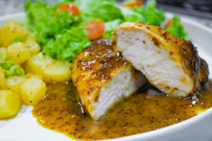

Recetas
Recetas
 Pollo
Pollo
 Pescado
Pescado
 Atun
Atun
 Veganas
Veganas
 Vegetarianas
Vegetarianas
 Quinoa
Quinoa

Pollo en salsa de mostaza y miel con quinoa
Un platillo con un delicioso contraste entre la dulzura de la miel y el toque ácido de la mostaza. El pollo se cocina en una salsa rica, acompañado de quinoa como guarnición para un platillo completo.
Dificultad
Dificil

Personas
4

TOTAL
40MIN
Ingredientes:
- ● 4 pechugas de pollo
- ● 1/4 taza de mostaza Dijon
- ● 2 cucharadas de miel
- ● 1 cucharada de vinagre de manzana
- ● 1 cucharada de aceite de oliva
- ● 1 taza de quinoa
- ● 2 tazas de caldo de pollo bajo en sodio
- ● Sal y pimienta al gusto
- ● 1 ramita de romero fresco (opcional)
Información nutricional (aproximada por porción):
- ● Calorías: 450 kcal
- ● Proteínas: 40 g
- ● Grasas: 15 g
- ● Carbohidratos: 40 g
- ● Fibra: 5 g
A cocinar:
- 1. Cocina la quinoa siguiendo las instrucciones del paquete, usando caldo de pollo en lugar de agua para más sabor. Esto tomará alrededor de 15-20 minutos.
- 2. Mientras la quinoa se cocina, calienta una sartén grande con el aceite de oliva. Salpica las pechugas de pollo con sal y pimienta y cocina las pechugas en la sartén a fuego medio-alto, unos 5-7 minutos por lado, hasta que estén doradas y cocidas por completo.
- 3. En un tazón pequeño, mezcla la mostaza, la miel y el vinagre de manzana hasta que se integren bien.
- 4. Una vez que el pollo esté cocido, agrega la salsa de mostaza y miel a la sartén con el pollo. Cocina a fuego lento durante 3-5 minutos, hasta que la salsa se espese y cubra bien el pollo.
- 5. Sirve el pollo con la quinoa al lado y decora con romero fresco si lo deseas.